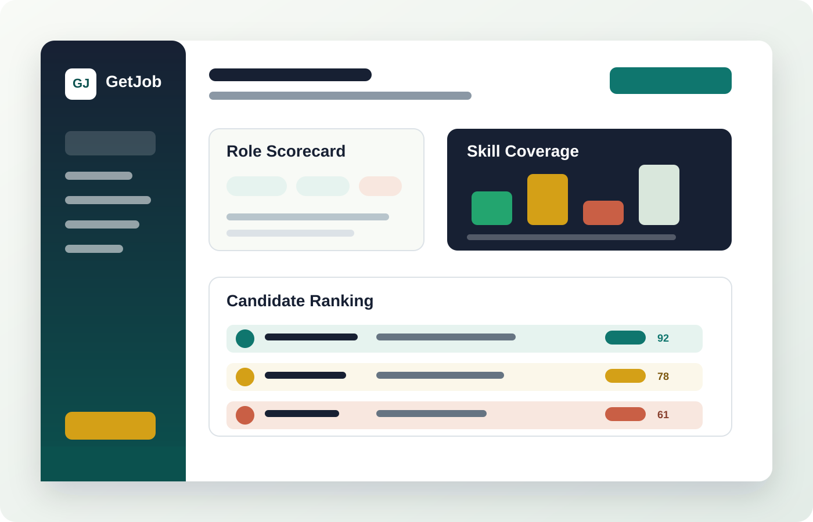

Describe the role
Add the job title, must-have skills, seniority, target experience, and business context.
AI Recruitment Agency
Getjobz turns job requirements and CVs into structured skills, experience signals, match scores, and a recruiter-ready shortlist.
Ranked Shortlist
The scoring model weighs required skills, role keywords, seniority, experience depth, and missing criteria.
How Getjobz Works
Recruiters define the role once. Getjobz extracts candidate evidence from CVs, compares it with the requirement profile, then presents the most suitable people with clear reasoning.

Add the job title, must-have skills, seniority, target experience, and business context.
Extract tools, industry exposure, years of experience, education, and achievements from candidate profiles.
Score candidates against hard requirements and highlight strengths, gaps, and interview focus areas.
Move the strongest candidates forward with a transparent summary that hiring managers can review quickly.
Agency Services
Getjobz supports hiring teams that need more signal from every CV without adding manual review hours.
Convert job descriptions into a weighted hiring scorecard with required skills, nice-to-haves, and screening criteria.
Parse candidate profiles and organize skills, years of experience, domains, tools, and career progression.
Rank applicants by role fit, flag missing requirements, and show the evidence behind every score.
Deliver manager-ready shortlists with interview prompts, screening notes, and comparison summaries.
Track candidate movement from applied to reviewed, shortlisted, interview, offer, and hired.
See sourcing quality, skill coverage, time saved, and shortlist conversion by role and department.
Responsible AI
Explainable scores. Every ranking includes matched skills, missing requirements, and evidence notes.
Bias-aware process. Recruiters review recommendations and can adjust scorecards before decisions are made.
Data controls. Candidate data policies, retention windows, and access permissions can be configured for each hiring team.
Final Decision Team
Getjobz combines automated screening with a senior review team that validates evidence, checks fit, and approves every shortlist before it reaches the hiring manager.
Head of Talent Decisions
Owns final shortlist approval, hiring manager calibration, and role-fit recommendations for senior and specialist roles.
People Operations Lead
Reviews experience depth, compensation fit, candidate readiness, and interview process quality before final recommendations.
AI Screening Analyst
Audits AI match scores, verifies extracted skills, flags missing evidence, and prepares interview focus notes for recruiters.
Client Hiring Partner
Aligns shortlist decisions with each client's business goals, culture signals, timeline, and final hiring criteria.
Get Started
Share your hiring need and the Getjobz team will respond with the best screening workflow for your role, volume, and timeline.